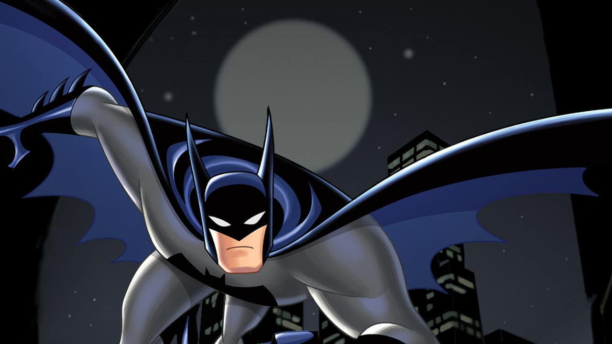
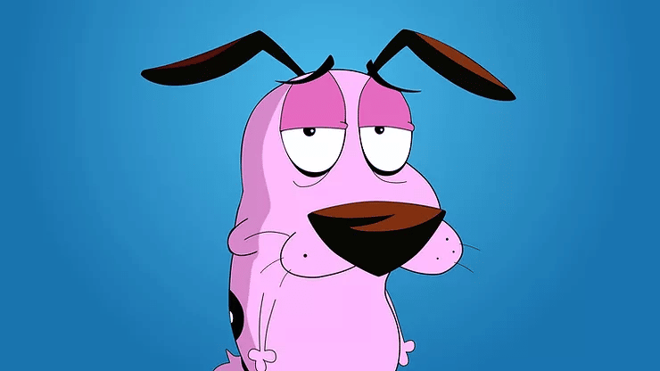
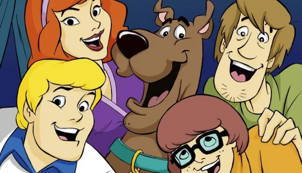
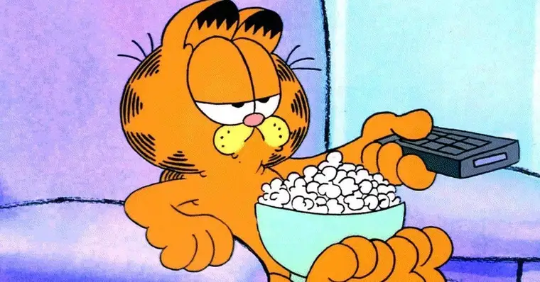
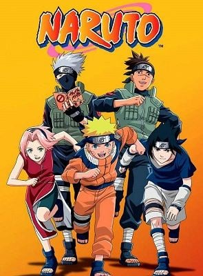
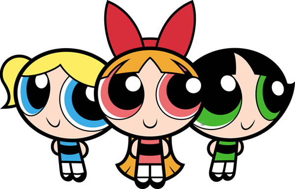
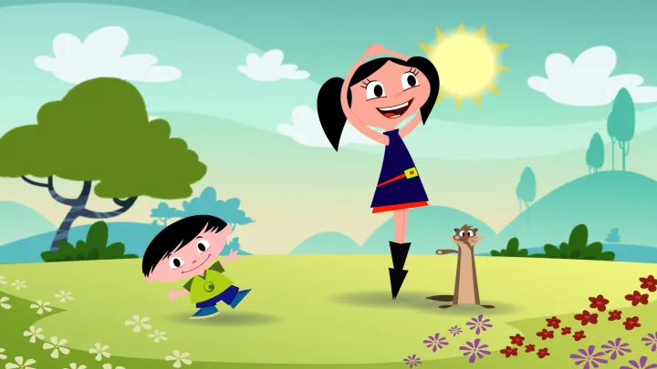
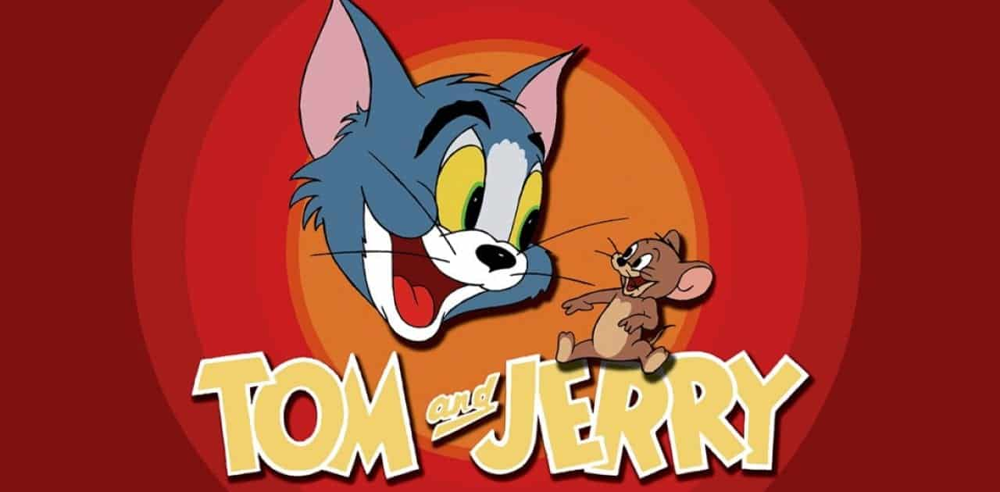

De dia, Bruce Wayne é um milionário dos negócios. Mas de noite, ele se transforma no vigilante Batman. Acompanhe as aventuras do Homem-Morcego tentando limpar as ruas de Gotham Ci
O desenho conta a história de um cachorro chamado Coragem e seus donos, Muriel Bagge, uma típica senhora escocesa, e Eustácio Bagge, um fazendeiro mal-humorado, que vivem juntos em uma fazenda localizada no meio da cidade deserta e fictícia de Lugar Nenhum, no Kansas (Eventualmente chamado de Lugar Nenhum).
Dois anos depois de separarem-se após resolverem seu último caso, a equipe da Mystery Inc. une-se para investigar estranhos acontecimentos em um parque mal-assombrado chamado Spook Island. A atração parece assombrar jovens visitantes de maneiras muito estranhas, mas cabe a Scooby, Salsicha e todo o grupo desvendar o mistério.
Uma simpática galinha azul de bolinhas brancas vive diversas aventuras ao lado de seu marido Galo Carijó e o filho Pintinho Amarelinho. Nas brincadeiras e aventuras, também entram outras personagens, como a divertida Popó, a Borboletinha e a Baratinha, que acompanham a família Pintadinha por toda parte.

Criado como um personagem de tirinhas de jornal em 1978, por Jim Davis, Garfield costuma protagonizar histórias onde causa problemas ao seu dono, Jon Arbuckle, por conta de seu estilo de via preguiçoso. Ele costuma ser acompanhado do cachorro Odie, ao lado do qual se tornou um ícone memorável da cultura pop.
Naruto é um anime baseado no mangá de mesmo nome escrito por Masashi Kishimoto. A série gira em torno das aventuras vividas por Naruto Uzumaki, um jovem órfão habitante da Aldeia da Folha que sonha em se tornar o quinto Hokage, o maior guerreiro e governante da vila.
Timmy Turner é um menino de 10 anos que só quer ter a vida perfeita. Mas seus pais trabalham o dia inteiro e ele é maltratado pela babá. Até que, um dia, ele recebe a visita de dois Padrinhos Mágicos, o divertido Cosmo e a responsável Wanda, que passam a ser seus companheiros inseparáveis.

Conta a história de três garotas com super poderes: Florzinha, Lindinha e Docinho. Elas foram criadas pelo Professor Utônio, que acidentalmente deixou derrubar o Elemento X na poção da "Garotinha Perfeita" (uma mistura de açúcar, tempero e tudo o que há de bom).
A série tem como protagonista a Luna, uma garota de seis anos que ama ciências, e que acredita que a Terra é um enorme laboratório em que ela pode descobrir diversas curiosidades. Luna, curiosa e destemida, não sossega até conseguir responder a pergunta: “O que está acontecendo aqui?”.
Tom é um gato determinado, porém impaciente, cujo objetivo de vida é capturar o ratinho Jerry. Porém, o pequeno animal é inteligente e cheio de habilidades. O clássico desenho acompanha as loucas e eletrizantes perseguições entre gato e rato.
